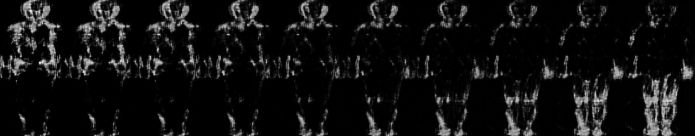
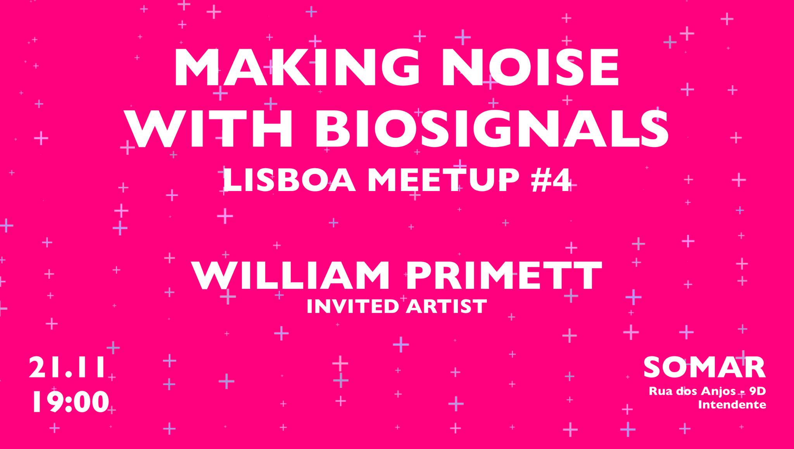

Latent Steps: Generative Bodily Animations From a Collection of Human Drawings and Physiological Data Interaction
Poster PDF | Video
Poster Presentation and Demo at DDCMC'19
Moving Digits – Artistic Residency and Performance
 More info |
Video
More info |
Video
Moving Digits – Artistic Residency and Performance at Sõltumatu Tantsu Lava, Tallinn, 2019
Making Noise With Biosignals
 Event LinkArtist Talk & Workshop, SOMAR Lisboa Meetup #4, 2019
Coupling Biomedical Sensors with Choreographic Language
 Video |
Event Archive
Video |
Event Archive
Movement and Computing Talk Series, Madeira Interactive Technologies Institute
Moving Digits (MODI) Soundsystem
 Video
Video
Concert and presentations at Barreirinha Bar Café (BBC)
· ·

Contact / Pages
weselle [at] protonmail.com LinkedIn Google Scholar GitHub Resident Advisor StravaBio
-
William Phoenix Primett is an Interaction Designer and Researcher based in Lisbon affiliated with the AffecTech consortium, pursuing the use of wearable technology for emotional understanding in consideration of mental health disorders. They are investigating new systems for expressive non-verbal communication using physiological data, advocating for non-representational and interpersonal biofeedback.
Skills
-
C++, Python, Node.js, Tensorflow, Keras,
openFrameworks, Processing, ChucK, Autodesk,
Unity, Max/MSP, Ableton Live, Adobe Suite